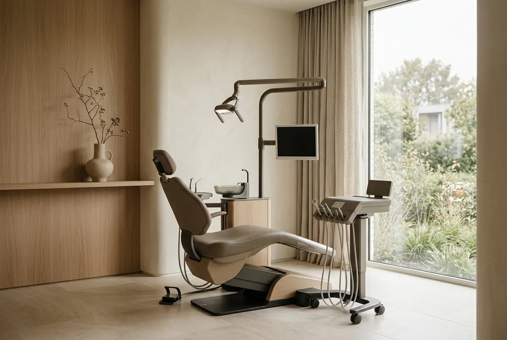
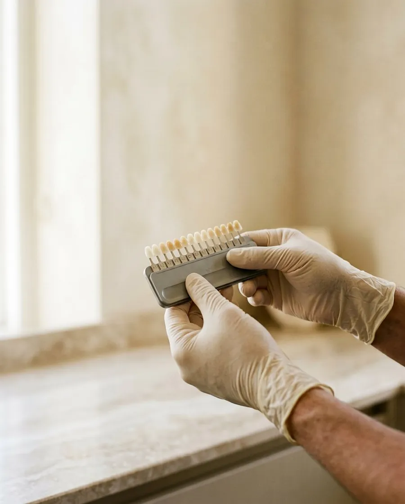
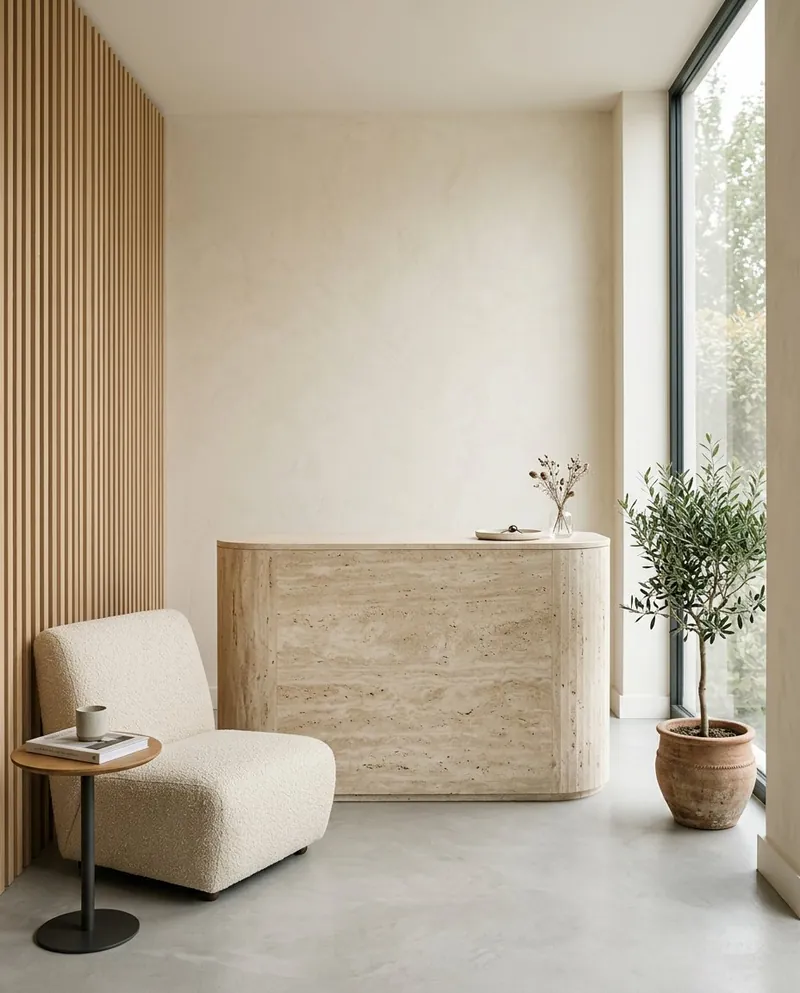
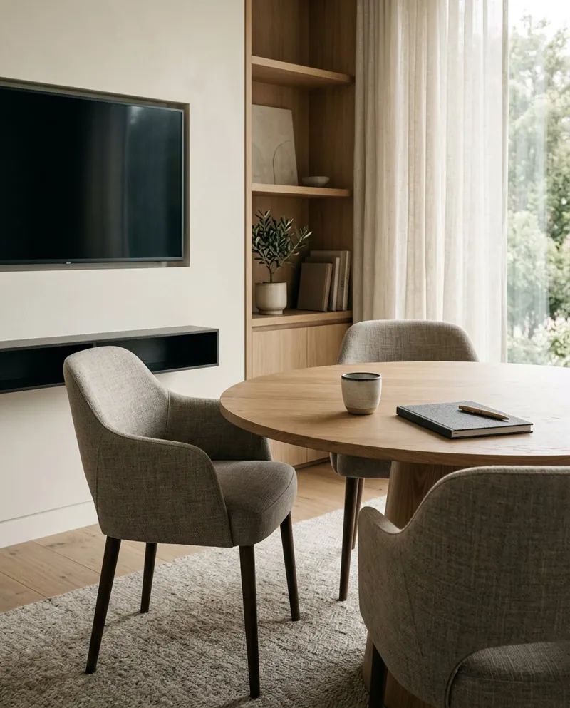
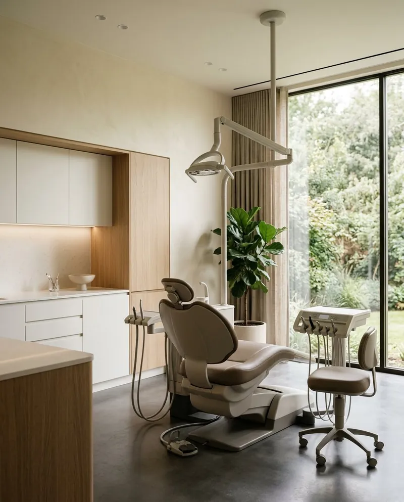
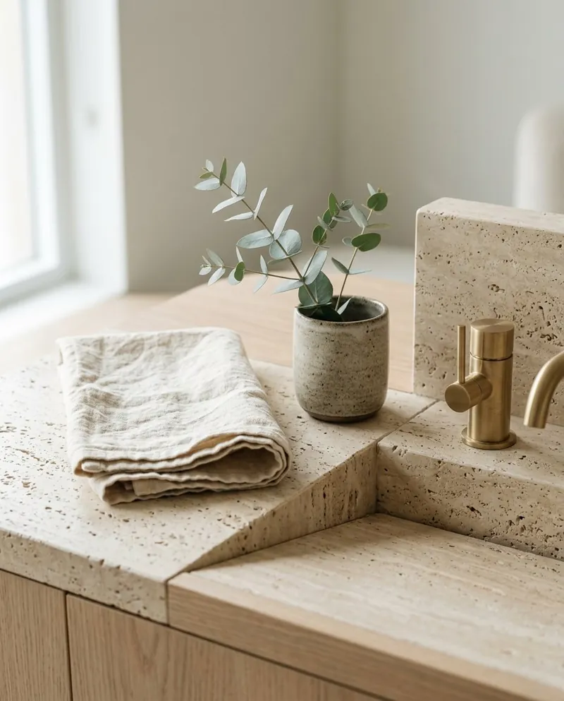
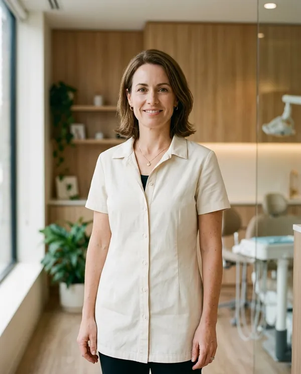
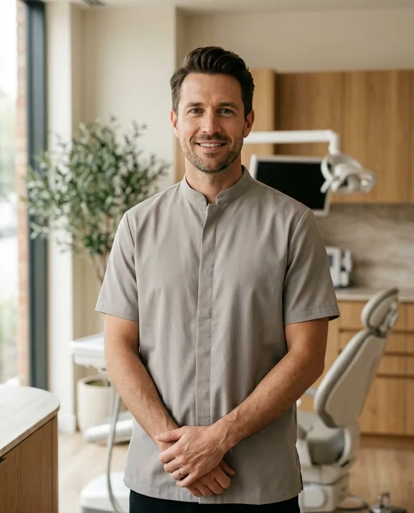
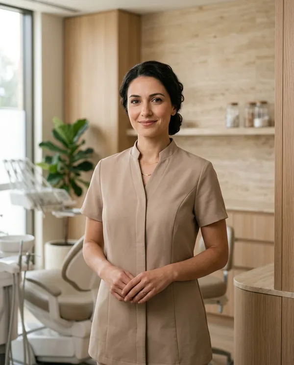

Private dental clinic · Westbridge
Exceptional Dentistry.Thoughtfully Delivered.
Personalised dental care in a calm, contemporary environment, designed around your comfort and long-term oral health.

Welcome
Dentistry with a more considered approach.
Arcadia Dental was imagined as a different kind of practice: one where every appointment begins with a conversation, where modern clinical standards sit alongside a genuinely comfortable environment, and where nothing is decided until it has been clearly explained.
We take a long view of oral health, helping you keep a healthy, natural smile for years to come rather than simply treating what is in front of us today.
- I
Personalised care
Treatment shaped around each patient’s needs.
- II
Modern clinic
Contemporary facilities and a carefully considered environment.
- III
Clear guidance
Straightforward explanations before every treatment decision.
- IV
Long-term thinking
A focus on maintaining healthy smiles over time.
Treatments
Treatments designed around you.
From routine care to carefully planned cosmetic and restorative treatment, every option is explained before anything is decided.
- 01General DentistryRoutine examinations, fillings and everyday dental care.Explore treatment→
- 02Preventive CareCleanings, oral-health guidance and preventative appointments.Explore treatment→
- 03Cosmetic DentistryThoughtfully planned treatments focused on smile aesthetics.Explore treatment→
- 04Restorative DentistryCare designed to restore function, comfort and appearance.Explore treatment→
- 05Orthodontic CareModern approaches to improving alignment and bite.Explore treatment→
- 06Dental ImplantsReplacement-tooth solutions planned around individual needs.Explore treatment→

Featured · Cosmetic Dentistry
A smile designed with intention.
Cosmetic dentistry at Arcadia is planned slowly and deliberately. We begin with what you would like to change, discuss what is realistically achievable, and design treatment that respects the natural character of your smile — never a one-size-fits-all result.
- Digital planning and shade matching in natural light
- Conservative approaches considered before anything more involved
- Clear written plan and costs before treatment begins
Our approach
A calmer way to experience dentistry.
Four stages, in every appointment, for every patient.
- 01
Listen
We begin by understanding your concerns, goals and expectations.
- 02
Understand
We explain the available options clearly and answer questions before treatment.
- 03
Plan
Your treatment is carefully considered around your individual needs.
- 04
Care
We focus on a comfortable experience and continued oral-health support.
Why Arcadia
Thoughtful care, from the first conversation onward.
We would rather explain than impress. Below is simply how we work — no numbers, no awards, just the things you can expect to notice.
- Personalised appointments
- Time is set aside so no appointment feels rushed, and your history is known before you sit down.
- Comfortable environment
- Warm materials, natural light and quiet rooms designed to make visits feel less clinical.
- Clear treatment explanations
- Options, alternatives and costs, explained plainly and written down before you decide.
- Modern clinical approach
- Contemporary equipment and techniques, used where they genuinely improve your care.
- Attention to detail
- From how a restoration matches a neighbouring tooth to how a follow-up is scheduled.
- Long-term relationships
- Continuity of care with the same team, focused on keeping you well rather than just treating problems.
The clinic
A clinic designed to feel different.
Warm materials, natural light, private consultation areas, modern treatment rooms and a waiting area you might actually enjoy sitting in.




Care team
Meet your care team.
A small team, so you see familiar faces at every visit. Fictional team members created for this concept.

Dr. Elena Maren
Lead Dentist

Dr. Adrian Cole
Restorative & Cosmetic Dentistry

Dr. Sofia Bennett
Orthodontic Care
Patient experience
From first appointment to ongoing care.
- 01
Consultation
Understand your concerns and goals.
- 02
Assessment
Review your dental health and discuss options.
- 03
Treatment Plan
Build a clear and personalised path forward.
- 04
Ongoing Care
Continue with regular reviews and preventative care.
Questions
Before your first visit.
If your question isn’t here, the team is always happy to talk it through.
What happens during a first consultation?
A first consultation is a conversation before it is anything else. We listen to what has brought you in, take a careful look at your teeth and gums, and talk through what we find. You leave with a clear picture and, where appropriate, options to consider — with no obligation to proceed.
How do I know which treatment is right for me?
We explain each suitable option, including the differences in approach, time and cost, and what we would recommend and why. The decision is always yours, made with the information you need.
Can I discuss treatment options before deciding?
Yes — we would encourage it. Written plans are provided so you can take time to consider them, and follow-up questions are welcome by phone or email.
Do you offer preventative appointments?
Regular examinations and hygiene appointments are the foundation of everything we do. We will suggest an interval that suits your individual oral health rather than a fixed schedule for everyone.
How can I request an appointment?
Use the enquiry form below, call the clinic, or email us. Tell us a little about what you are looking for and we will suggest the most suitable first appointment.
What should I bring to my first visit?
Any recent dental records or x-rays if you have them, a list of current medications, and any questions you would like answered. If you don’t have any of these, that is perfectly fine.
Book a consultation
Your next appointment can start with a conversation.
Tell us what you’re looking for and our team will help you understand the next step.
ARCADIA DENTAL 48 Willow StreetWestbridge
Concept City +00 0000 000 000
hello@arcadiadental.example Mon – Fri 8:30 – 18:00
Sat 9:00 – 14:00 Fictional contact details for demonstration only.